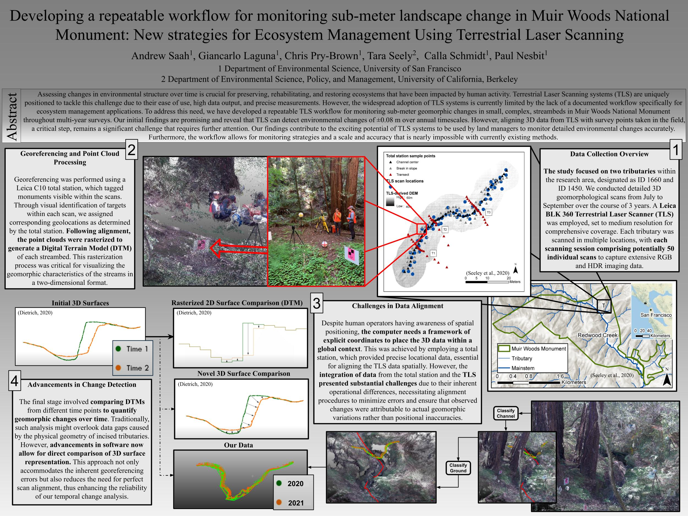

Title: Developing a repeatable workflow for monitoring sub-meter landscape change in Muir Woods National Monument: New strategies for Ecosystem Management Using Terrestrial Laser Scanning
Authors: Andrew Saah, Giancarlo Laguna, Chris Pry-Brown, Tara Seely, Calla Schmidt, Paul Nesbit
Abstract: Assessing changes in environmental structure over time is crucial for preserving, rehabilitating, and restoring ecosystems that have been impacted by human activity. Terrestrial Laser Scanning systems (TLS) are uniquely positioned to tackle this challenge due to their ease of use, high data output, and precise measurements. However, the widespread adoption of TLS systems is currently limited by the lack of a documented workflow specifically for ecosystem management applications. To address this need, we have developed a repeatable TLS workflow for monitoring sub-meter geomorphic changes in small, complex, streambeds in Muir Woods National Monument throughout multi-year surveys. Our initial findings are promising and reveal that TLS can detect environmental changes of ±0.08 m over annual timescales. However, aligning 3D data from TLS with survey points taken in the field, a critical step, remains a significant challenge that requires further attention. Our findings contribute to the exciting potential of TLS systems to be used by land managers to monitor detailed environmental changes accurately. Furthermore, the workflow allows for monitoring strategies and a scale and accuracy that is nearly impossible with currently existing methods.
Back